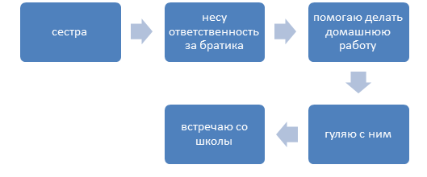

Дорогие ребята! В этом году вам предстоит выполнить проект, посвященный развитию социально-ответственного поведения и осознанию своей ответственности за свой выбор и за мир, в котором мы живем.
Часто мы слышим и даже сами говорим такие слова: «Почему в подъезде грязно? Кто должен убрать мусор на берегу реки? Почему все бросают бумажки и бутылки на улице? Кто отвечает за охрану памятников культуры? …и т.д.» А давайте задумаемся, что произойдет, если каждый из нас почувствует свою личную ответственность за все, что происходит вокруг и что-нибудь сделает для улучшения нашей общей жизни? Конечно. Мир станет лучше! Но кто-то должен начать! … Кто, если не я? *** В послании «Взгляд в будущее: модернизация общественного сознания» глава государства Назарбаев Н.А. делиться со своим видением: «Казахстан вступил в новый исторический период. В этом году своим Посланием я объявил о начале Третьей модернизации Казахстана. Я убежден: начатые нами масштабные преобразования должны сопровождаться опережающей модернизацией общественного сознания. Она не просто дополнит политическую и экономическую модернизацию – она выступит их сердцевиной. Поэтому я решил поделиться своим видением того, как нам вместе сделать шаг навстречу будущему, изменить общественное сознание, чтобы стать единой Нацией сильных и ответственных людей». В 1996 году Совет Европы назвал несколько групп компетенций, которыми должен владеть современный человек и на первом месте среди них отмечена компетенция ответственности как одна из значимых компетенций. Последнее особенно актуально в связи с практическим решением вопроса об образовании «на протяжении жизни», или, по выражению членов международной комиссии ЮНЕСКО по определению стратегий развития образования в мире, «учиться быть» («learning to be»). Это означает, что у человека должно быть постоянное желание «быть, а не казаться». Что так же находит свое отражение в концепции программы духовно-нравственного образования «Самопознания» – «Единство мысли, слова и дела».
Проектная деятельность продумана так, чтобы с каждым этапом
реализации проекта сфера вашей осознанной ответственности
расширялась:
1 этап «Мои социальные роли» – осознание ответственности за свою
личную жизнь: взаимоотношения в семье, школе, с друзьями и т.д. Кто,
если не я сделает мой личный мир лучше?
2 этап «Служение обществу» – осознание ответственности за свою малую
родину: город, поселок, район. Кто, если не я сделает мою малую
родину лучше?
3 этап «Я – гражданин Казахстана» – осознание ответственности за
свою Родину Казахстан: изучение истории и географии родного края –
вклад в развитие сакральной географии Казахстана. Кто, если не я
сделает мою великую Родину Казахстан лучше?
4 этап «Творческий отчет» – презентация результатов работы за год, в которой важно поделиться личным опытом осознания своей ответственности за свой выбор и за мир, в котором мы живем. Кто, если не я?
Первый этап направлен на практическую деятельность по развитию личной ответственности за свою жизнь и качество взаимоотношений в ней. На этом этапе вам предстоит осознать свои социальные роли и реализовать свое понимание долга в каждой из них. Изучение первого раздела учебника «На пути познания» поможет вам выстроить позитивные взаимоотношения в вашем личном мире. Также в течении первого этапа вы сможете подготовиться к следующему этапу деятельности, размышляя над тем, что вы можете сделать для своей малой родины.
Задание 1. Заполните в тетради ученика дневник проекта, в котором пошагово отражайте все мысли, слова и поступки, за которые вы несете ответственность. Для начала ответьте, пожалуйста, на вопросы.
• Что значит «быть собой»? Насколько это имеет значение для мира и общества?
• Какое значение приобретает совесть, когда мы говорим об ответственности за мир, в котором мы живем?
• Подумайте, какие ваши поступки основаны на бескорыстном служении?
Задание 2. Составьте кластер своих социальных ролей и опишите свое понимание долга в каждой из них. Например, внизу в виде схемы представлена социальная роль старшей сестры и обязанности ее. Таким образом, необходимо описать все свои социальные роли в ближайшем окружении – сына, дочери, ученика (-цы), друга, подруги, внучка (-и), жителя города и т.д.
